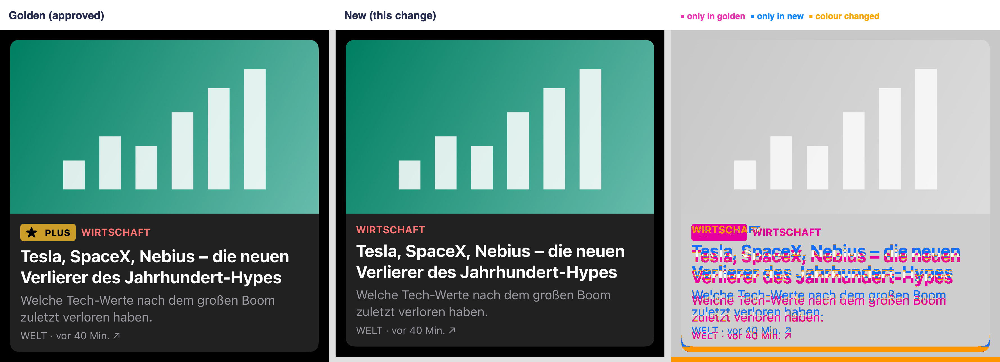

When something changes on screen
What happens when a pull request changes how a screen looks, whether by accident (a bug) or on purpose (a redesign). The tests can't know which, so a person decides.
What the reviewer sees
The diff report
For every changed picture: the golden, the new picture, and the difference: magenta = only in the golden, blue = only in the new picture, orange = colour changed. This one is from this project's deliberate regression: the PLUS badge is gone.

The bot comment
Posted on the pull request, so the reviewer knows what kind of change it is before opening a single picture.
layout = the picture changed size · visible = pixels a person can see · subtle = tiny colour shift only. These sort the changes; they never approve anything.
The two paths
It's a bug (unintended)
Example: a refactor dropped the PLUS badge.
⑥ The developer fixes the code and pushes. The goldens stay exactly as they are. CI runs again; once every picture matches, it's green, and it continues like the normal flow: review, merge.
It's intended (a redesign)
Example: design wants rounder cards, so many pictures change on purpose.
⑥ The developer adds the record-snapshots label. ⑦ CI records new goldens on its fixed machine, checks they aren't blank and that a full run passes with them, then pushes them as a "snapshot-bot" commit. ⑧ CI verifies again. ⑨ Because golden files changed, a design or QA code owner must approve the new pictures. ⑩ Merge.
Two rules: goldens are only ever recorded by CI, never on someone's laptop (a different machine could produce slightly different pixels). And approval is never automatic: a machine says what changed, a person says whether it was meant to.
Diff gallery (golden / this PR / changed pixels) is attached to this run.
29 changed (layout: 10, visible: 19, subtle: 0), 0 new
ComponentSnapshotTests/test_breakingBanner_default.light.pngComponentSnapshotTests/test_teaserCard_premium.dark.png• Intended? Add the
record-snapshotslabel. CI re-records, verifies and pushes the goldens; a design/QA code owner then approves the golden diff in this PR.